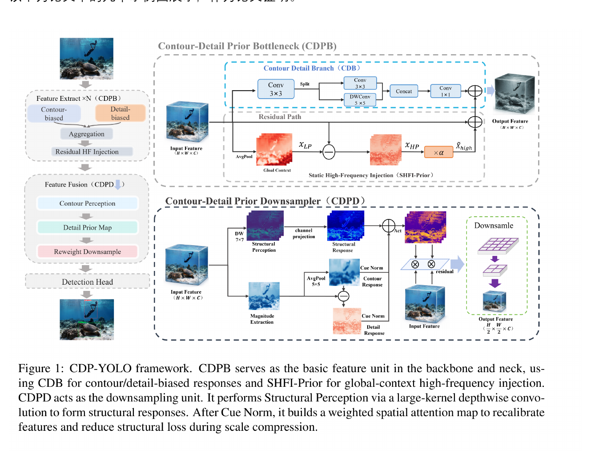

第一作者论文 · Optics and Laser Technology · Major Revision Submitted
Contour-Detail Priors for Noise-Coupled Underwater Object Detection
Optics and Laser Technology
JCR Q1
中科院二区 TOP
IF: 5.1
Major Revision Submitted
2026
针对水下光传播退化造成的目标结构信息弱化问题，提出轮廓-细节先验引导方法，并通过残差路径重构、AHFI-Res 与 CDP 架构增强水下目标检测中的结构表达能力。
